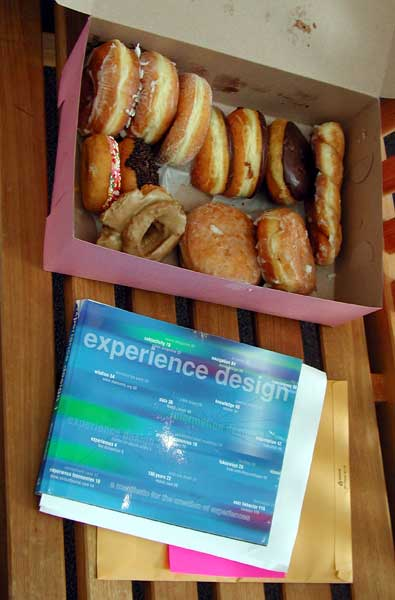

Media Theory, History, & Criticism
CLU - Fall 2002
Here
you can view some of the final projects produced in my Media Theory, History,
& Criticism course, headed by Professor Daniel Restuccio.
The assignment was to develop a concept for an original holiday, with all the
various aspects such as songs, traditions, colors, media, food, etc. fleshed
out.
For our final, we had to pitch our concepts to a group of visitors.
Have fun playing with the hotspots, or click here for text listing of the photos:
